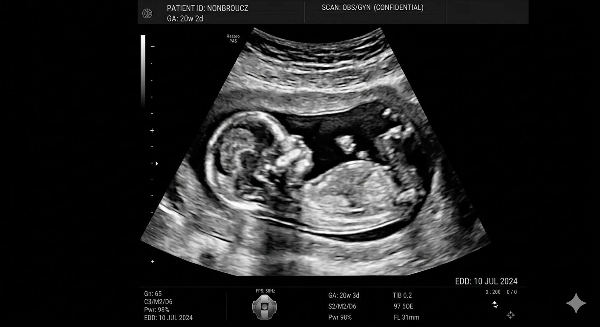
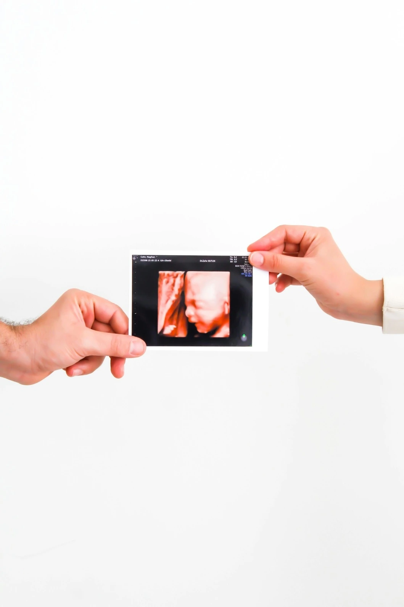

Of all the scans carried out during pregnancy, the anomaly scan pregnancy examination at 20 weeks stands apart. Also known as the TIFFA scan, Level 2 ultrasound, or mid-pregnancy anatomy scan, this is the single most detailed fetal health assessment available during the antenatal period. Understanding the 20-week pregnancy scan importance can help every expecting parent prepare forand fully appreciate this essential appointment. At Meera 4D Scans Madurai, the best diagnostic centre for TIFFA scan Madurai, our top radiologists for anomaly scan in Madurai perform every examination with precision, care, and compassion. Book your 20-week anatomy scan appointment with us today.
What is an Anomaly Scan?
An anomaly scan pregnancy examination is a detailed ultrasound carried out between 18 and 22 weeks of pregnancymost commonly at exactly 20 weeks. It is known by several names:
Other Names for the Anomaly Scan
- TIFFA ScanTargeted Imaging for Fetal Anomalies
- Level 2 Ultrasounda more detailed scan than the routine Level 1
- Mid-pregnancy scannamed for its timing at the midpoint of pregnancy
- 20-week anatomy scana systematic review of all major fetal organ systems
- Morphology scanassesses the structural form and development of the baby
Regardless of the name used, this is the same comprehensive examination. At Meera 4D Scans Madurai, we perform the anomaly scan pregnancy using advanced high-resolution technology, and we also offer exclusive anomaly scan with 4D imaging Maduraigiving you a real-time moving view of your baby alongside the full diagnostic report.
Meera 4D Scans Madurai is the best diagnostic centre for TIFFA scan Maduraicombining the precision of Level 2 ultrasound with the warmth of 4D imaging, performed by top radiologists for anomaly scan in Madurai with same-day detailed reports for every family.
20-Week Pregnancy Scan ImportanceWhy This Scan Matters Most
The 20-week pregnancy scan importance cannot be overstated. While earlier scans confirm viability and dating, and later scans monitor growth, only the anomaly scan provides a complete head-to-toe structural assessment of your baby at the optimal stage of development. Here is why it is the most critical appointment in your antenatal calendar:
Why 20 Weeks is the Optimal Timing
- The baby is large enough for detailed organ assessmentyet small enough that all structures fit within one ultrasound view
- Amniotic fluid levels are at their bestproviding a clear acoustic window for imaging
- All major organ systems are fully formed and visible on ultrasound
- If any condition is identified, there is still time for specialist referral, further testing, and birth planning
- Placental position and amniotic fluid levels can be assessed before later pregnancy complications arise
What the Anomaly Scan Assesses
| Body System | What is Checked |
|---|---|
| Brain & Head | Head shape, brain ventricles, cerebellum, skull formation |
| Face | Lips, nose, eye sockets, palate (cleft lip screening) |
| Spine | Vertebral alignment, spina bifida screening |
| Heart | Four chambers, outflow tracts, cardiac rhythm |
| Abdomen | Stomach, abdominal wall, umbilical cord insertion |
| Kidneys | Both kidneys present, bladder filling and emptying |
| Limbs | Arms, legs, hands, feetbone length and structure |
| Placenta & Fluid | Placental position, amniotic fluid index, cervical length |

Level 2 Ultrasound BenefitsWhat Makes It Different
Many parents ask what separates this scan from routine pregnancy scans. The level 2 ultrasound benefits are substantial and go far beyond what any earlier scan can provide:
Clinical Level 2 Ultrasound Benefits
- Full fetal anatomy survey28+ anatomical structures systematically examined
- Heart screening four-chamber view plus outflow tracts, detecting major cardiac defects
- Neural tube defect screeningspina bifida and anencephaly assessment
- Placenta previa detectionidentifies low-lying placenta before it becomes a delivery risk
- Accurate fetal measurementsconfirms gestational age and growth trajectory
- Twin pregnancy complicationsassesses chorionicity and individual fetal development in multiple pregnancies
Enhanced Level 2 Ultrasound Benefits with 4D Imaging
At Meera 4D Scans Madurai, the level 2 ultrasound benefits go even further with our exclusive anomaly scan with 4D imaging Madurai package. In addition to the full diagnostic assessment, you receive:
- Live real-time video of your baby's face and movements
- Three-dimensional facial images to see your baby's features in detail
- Precious memories alongside essential clinical informationin a single visit
The anomaly scan with 4D imaging Madurai at Meera 4D Scans is uniquecombining the thoroughness of a full anomaly scan pregnancy with the emotional experience of seeing your baby in three-dimensional detail.

Is an Anomaly Scan Compulsory for Every Pregnancy?
Is an anomaly scan compulsory for every pregnancy? This is one of the most frequently asked questions at Meera 4D Scans Madurai. The direct answer is: while it is not legally mandatory in India, every obstetrician and maternal-fetal medicine specialist strongly recommends it for all pregnanciesregardless of age, health status, or prior scan results.
Why It is Recommended for All Pregnancies
- Many structural anomalies occur in pregnancies with no known risk factorslow-risk pregnancies are not immune
- Early identification allows specialist referral and preparation of an appropriate birth plan
- Placenta previa and umbilical cord abnormalitiesdetected only at this scanrequire delivery planning
- Normal results provide reassurance a clear anomaly scan is an enormous source of confidence for parents
- The 20-week pregnancy scan importance is recognised by WHO, FOGSI, and all major obstetric guidelines globally
Is an anomaly scan compulsory for every pregnancy? At Meera 4D Scans Madurai, we treat it as the one scan no pregnancy should be without. Book your 20-week anatomy scan appointment with our expert team today.
Can the Anomaly Scan Detect All Birth Defects?
Can the anomaly scan detect all birth defects? This is an important question, and we believe every parent deserves an honest answer. The anomaly scan is the most powerful structural screening tool available during pregnancybut it does not detect every possible condition.
What the Anomaly Scan Can and Cannot Detect
- Can detect approximately 50–70% of major structural abnormalities, including heart defects, neural tube defects, kidney problems, cleft lip, limb abnormalities, and abdominal wall defects
- Detection depends on baby's position, maternal body type, amniotic fluid levels, gestational age, and the quality of equipment and expertise used
- Cannot reliably detectchromosomal conditions (such as Down syndromethese require separate blood tests), minor abnormalities, conditions that develop after 20 weeks, or genetic syndromes without visible structural markers
Can the anomaly scan detect all birth defects? Nobut at Meera 4D Scans Madurai, our top radiologists for anomaly scan in Madurai use the most advanced equipment available to maximise detection accuracy. Our detailed reports give your doctor the clearest possible picture of your baby's health.
What Happens During the Anomaly Scan at Meera 4D Scans?
Here is a step-by-step walkthrough of your anomaly scan pregnancy experience at Meera 4D Scans Madurai:
Arrival & Registration
You arrive at Meera 4D Scans Madurai and complete a quick registration. Partners and family members are warmly welcome to accompany you for this special appointment.
Preparation
A moderately full bladder is recommendeddrink 2–3 glasses of water 30 minutes before your scan. This improves image quality, particularly for the placental position assessment.
The Anomaly Scan
You lie comfortably while our sonologist applies warm gel to your abdomen. Our top radiologists for anomaly scan in Madurai systematically examine all 28+ fetal anatomical structures in a thorough, unhurried manner.
4D Imaging (Optional Upgrade)
Following the diagnostic examination, our exclusive anomaly scan with 4D imaging Madurai package allows you to see your baby in real-time 3Dcapturing precious facial expressions and movements as a keepsake.
Same Day Detailed Report
At Meera 4D Scans Madurai, you receive your complete anomaly scan report on the same daya detailed, structured document your obstetrician can use immediately for ongoing pregnancy care.
How to Prepare for Your 20-Week Anomaly Scan
Once you book your 20-week anatomy scan appointment at Meera 4D Scans Madurai, here is how to get the most from your visit:
- Moderately full bladderdrink 2–3 glasses of water 30 minutes before. Not too full, not empty
- No fasting requiredeat and drink normally throughout the day
- Book at 18–22 weeksthe ideal window for the anomaly scan pregnancy examination; 20 weeks is optimal
- Bring your antenatal documentsprevious scan reports and blood test results help our team provide complete care
- Wear comfortable two-piece clothingeasy access to the abdomen is needed
- Bring your partnerthe anomaly scan is a long, detailed appointment and sharing it makes it a memorable experience
Why Meera 4D Scans is the Best Diagnostic Centre for TIFFA Scan Madurai
Meera 4D Scans Madurai is trusted by thousands of families as the best diagnostic centre for TIFFA scan Madurai. Here is what sets us apart:
- Top radiologists for anomaly scan in Maduraicertified, experienced, and specialised in fetal imaging
- Advanced high-resolution ultrasound technologymaximum detection accuracy for structural anomalies
- Anomaly scan with 4D imaging Maduraidiagnostic precision combined with a memorable bonding experience
- Same-day detailed structured reportsready for your doctor immediately after your scan
- Family-friendly environmentpartners and family are always welcome
- Trusted by 10,000+ families in Madurai for diagnostic and pregnancy scans
The 20-week pregnancy scan importance is too significant to leave to chance. Choose Meera 4D Scans Maduraithe best diagnostic centre for TIFFA scan Maduraiand get the most thorough, accurate, and caring anomaly scan experience in the city. Book your 20-week anatomy scan appointment todaysame-day slots available.
Useful Resources
These trusted health and medical resources provide additional information about the anomaly scan, fetal anatomy screening, and antenatal care.
-
WHOMaternal Health & Antenatal Care Guidelines World Health Organization guidelines on antenatal care, fetal screening, and safe pregnancy monitoring worldwide.
-
National Health Portal IndiaPregnancy Care India's official health portal covering antenatal scans, fetal screening, and pregnancy care guidelines.
-
NCBIObstetric Ultrasound & Fetal Anomaly Screening Peer-reviewed clinical research on obstetric ultrasound, TIFFA scan protocols, and fetal anomaly detection accuracy.